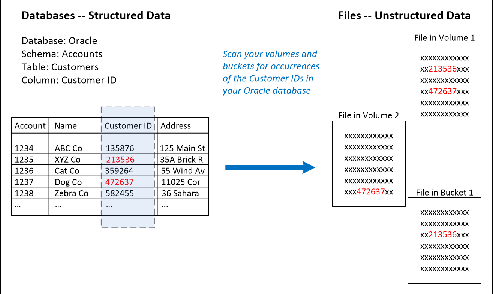
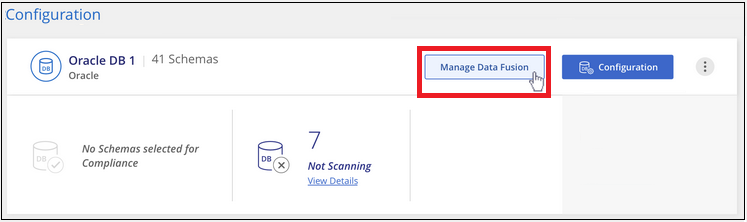
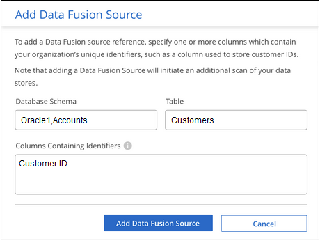
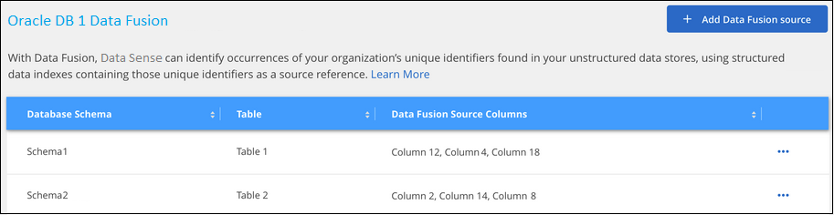
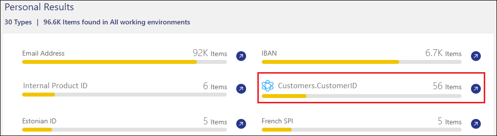
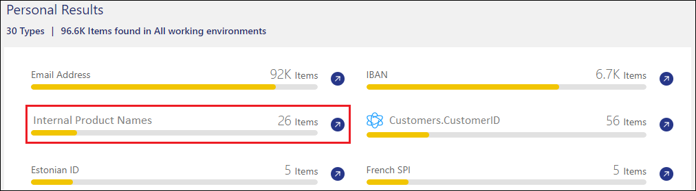
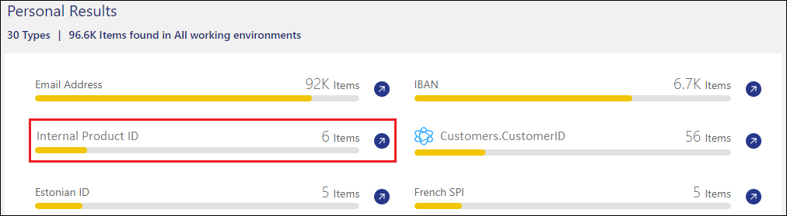

Demander de modifier un document
Demander de modifier un document Modifier sur GitHub
Modifier sur GitHub Guide des contributeurs
Guide des contributeursAjout d’identifiants de données personnels à vos acquisitions de détection de données
Contributeurs
Data Sense offre de nombreuses façons d’ajouter une liste personnalisée de « données personnelles » que Data Sense identifiera dans les futures analyses, vous donnant une idée complète de l’emplacement des données potentiellement sensibles dans les fichiers All de votre entreprise.
-
Vous pouvez ajouter des identificateurs uniques basés sur des colonnes spécifiques dans les bases de données que vous numérisez.
-
Vous pouvez ajouter des mots-clés personnalisés à partir d’un fichier texte — ces mots sont identifiés dans vos données.
-
Vous pouvez ajouter un motif personnel à l’aide d’une expression régulière (regex) — le regex est ajouté aux motifs prédéfinis existants.

|
Les fonctionnalités décrites dans cette section ne sont disponibles que si vous avez choisi d’effectuer une analyse de classification complète sur vos sources de données. Les sources de données qui ont une analyse avec mappage uniquement n’affichent pas de détails au niveau des fichiers. |
Ajoutez des identifiants de données personnelles personnalisés à partir de vos bases de données
Une fonctionnalité que nous appelons Data Fusion vous permet d’analyser les données de votre organisation pour identifier si des identificateurs uniques de vos bases de données sont trouvés dans l’une de vos autres sources de données. Vous pouvez choisir les identificateurs supplémentaires que Data Sense recherche dans ses acquisitions en sélectionnant une colonne ou des colonnes spécifiques dans une table de base de données. Par exemple, le diagramme ci-dessous montre comment Data Fusion est utilisé pour analyser vos volumes, compartiments et bases de données pour rechercher les occurrences de tous vos identifiants client à partir de votre base de données Oracle.

Comme vous pouvez le voir, deux ID de client uniques ont été trouvés sur deux volumes et dans un compartiment S3. Toutes les correspondances dans les tables de base de données seront également identifiées.
Notez que puisque vous scannez vos propres bases de données, quelle que soit la langue dans laquelle vos données sont stockées, vous pourrez identifier les données dans les futures analyses de détection de données.
Vous devez avoir "ajout d’au moins un serveur de base de données" À Data Sense avant d’ajouter des sources de données Fusion.
-
Dans la page Configuration, cliquez sur gérer Fusion de données dans la base de données où résident les données source.

-
Cliquez sur Ajouter une source de données Fusion sur la page suivante.
-
Dans la page Add Data Fusion Source :
-
Sélectionnez le schéma de la base de données dans le menu déroulant.
-
Entrez le nom de la table dans ce schéma.
-
Entrez la colonne ou les colonnes contenant les identifiants uniques que vous souhaitez utiliser.
Lors de l’ajout de plusieurs colonnes, entrez chaque nom de colonne ou de vue de table sur une ligne distincte.

-
-
Cliquez sur Ajouter une source de données Fusion.
La page d’inventaire de Data Fusion affiche les colonnes source de la base de données que vous avez configurées détection des données à analyser.

Après l’analyse suivante, les résultats incluent ces nouvelles informations dans le tableau de bord de conformité sous la section « Résultats personnels » et dans la page Investigation du filtre « données personnelles ». Chaque colonne source que vous avez ajoutée apparaît dans la liste des filtres au format Table.Column, par exemple Customers.CustomerID.

Supprimer une source de Data Fusion
Si vous décidez à un moment donné de ne pas numériser vos fichiers à l’aide d’une source Data Fusion donnée, vous pouvez sélectionner la ligne source dans la page d’inventaire Data Fusion et cliquer sur Supprimer la source Data Fusion.

Ajoutez des mots-clés personnalisés à partir d’un fichier texte
Vous pouvez ajouter des mots-clés personnalisés à Data Sense afin qu’ils identifient des informations spécifiques dans vos données. Vous ajoutez les mots clés d’un fichier texte que vous définissez. Les mots-clés sont ajoutés aux mots-clés prédéfinis existants que Data Sense utilise déjà et les résultats seront visibles sous la section motifs personnels.
Par exemple, vous pouvez voir où les noms de produits internes sont mentionnés dans tous vos fichiers pour vous assurer que ces noms ne sont pas accessibles dans des emplacements qui ne sont pas sécurisés.
Après la mise à jour des mots-clés personnalisés, Data Sense redémarre l’analyse de toutes les sources de données. Les nouveaux résultats apparaissent dans Data Sense une fois l’analyse terminée.
Vous devez ajouter, ou créer, les fichiers texte qui incluent les mots clés personnalisés à l’emplacement suivant sur le système Data Sense :
/opt/netapp/Datasense/tools/datascience/custom_keywords/keywords_sets Vous pouvez créer un seul fichier avec plusieurs mots-clés, ou vous pouvez ajouter de nombreux fichiers qui contiennent chacun certains mots-clés. Le format du fichier est un mot sur chaque ligne, par exemple, les noms de produits internes qui sont des types de hiboux sont répertoriés ci-dessous :
internal_product_names.txt
barred barn horned snowy screech
La recherche de données SENSE pour ces éléments n’est pas sensible à la casse.
Prenez en compte les conditions suivantes :
-
Le nom de fichier ne doit pas contenir de chiffres.
-
Chaque fichier peut contenir un maximum de 100,000 mots. S’il y a plus de mots, seuls les 100,000 premiers sont ajoutés.
-
Chaque mot doit comporter au moins 3 caractères. Les mots plus courts sont ignorés.
-
Les mots en double ne sont ajoutés qu’une seule fois.
Accès à la ligne de commande
Vous devrez accéder au système Data Sense pour lancer la commande afin d’ajouter des mots-clés personnalisés.
Lorsque Data Sense est installé sur votre site, vous pouvez accéder directement à la ligne de commande.
Lorsque Data Sense est déployé dans le cloud, vous devez utiliser SSH vers l’instance Data Sense. Vous vous SSH dans le système en saisissant l’utilisateur et le mot de passe, ou en utilisant la clé SSH fournie lors de l’installation du connecteur BlueXP. La commande SSH est :
ssh -i <path_to_the_ssh_key> <machine_user>@<datasense_ip> * <path_to_the_ssh_key> = emplacement des clés d'authentification ssh * <machine_utilisateur> :
+
Pour AWS : utilisez <utilisateur ec2>
Pour Azure : utilisez l’utilisateur créé pour l’instance BlueXP
** Pour GCP : utilisez l’utilisateur créé pour l’instance BlueXP
-
<dataense_ip> = adresse IP de l’instance de la machine virtuelle
Notez que vous devrez modifier les règles entrantes du groupe de sécurité pour accéder au système sur le cloud. Pour plus de détails, voir :
Syntaxe de commande pour ajouter des mots-clés personnalisés
La syntaxe de commande permettant d’ajouter des mots-clés personnalisés à partir d’un fichier est la suivante :
sudo bash tools/datascience/custom_keywords/upload_custom_keywords.sh -s activate -f <file_name>.txt * <nom_fichier> = nom du fichier contenant les mots-clés.
Vous exécutez la commande à partir du chemin /opt/netapp/Datase/.
Si vous avez créé de nombreux fichiers contenant des mots-clés personnalisés, vous pouvez ajouter les mots-clés de tous les fichiers en même temps à l’aide de la commande suivante :
sudo bash tools/datascience/custom_keywords/upload_custom_keywords.sh -s activate
Exemple
Pour voir où vos noms de produits internes sont mentionnés dans tous vos fichiers, entrez la commande suivante.
[user ~]$ cd /opt/netapp/Datasense/
[user Datasense]$ sudo bash tools/datascience/custom_keywords/upload_custom_keywords.sh -s activate -f internal_product_names.txtlog v1.0 | 2022-08-24 08:16:25,332 | INFO | ds_logger | upload_custom_keywords | 126 | 1 | None | upload_custom_keywords_126 | All legal keywords were successfully inserted .Résultats Après l'analyse suivante, les résultats incluent ces nouvelles informations dans le tableau de bord de conformité sous la section « Résultats personnels » et dans la page Investigation du filtre « données personnelles ».

Comme vous pouvez le voir, le nom du fichier texte est utilisé comme nom dans le panneau des résultats personnels. De cette manière, vous pouvez activer des mots-clés à partir de différents fichiers texte et voir les résultats pour chaque type de mot-clé.
Désactiver les mots clés personnalisés
Si vous décidez ultérieurement que vous n’avez pas besoin de détection de données pour identifier certains mots-clés personnalisés que vous avez ajoutés précédemment, utilisez l’option deactivate de la commande pour supprimer les mots-clés qui sont définis dans le fichier texte.
sudo bash tools/datascience/custom_keywords/upload_custom_keywords.sh -s deactivate -f <file_name>.txt Par exemple, pour supprimer les mots clés définis dans le fichier *Internal_PRODUCT_Names.txt* :
[user ~]$ cd /opt/netapp/Datasense/
[user Datasense]$ sudo bash tools/datascience/custom_keywords/upload_custom_keywords.sh -s deactivate -f internal_product_names.txtlog v1.0 | 2022-08-24 08:16:25,332 | INFO | ds_logger | upload_custom_keywords | 87 | 1 | None | upload_custom_keywords_87 | Deactivated keyword pattern from internal_product_names.txt successfully
Ajoutez des identificateurs de données personnelles personnalisés à l’aide d’un regex
Vous pouvez ajouter un modèle personnel pour identifier des informations spécifiques dans vos données à l’aide d’une expression régulière personnalisée (regex). Le regex est ajouté aux modèles prédéfinis que Data Sense utilise déjà et les résultats seront visibles sous la section motifs personnels.
Par exemple, vous pouvez voir où vos ID de produit internes sont mentionnés dans tous vos fichiers. Si l’ID de produit a une structure claire, par exemple, il s’agit d’un numéro à 12 chiffres commençant par 201, vous pouvez utiliser la fonction regex personnalisée pour la rechercher dans vos fichiers.
Après avoir ajouté la fenêtre regex, Data Sense redémarre l’acquisition de toutes les sources de données ; les nouveaux résultats apparaissent dans le message logique de données une fois l’analyse terminée.
Syntaxe de commande pour ajouter le regex
Vous devrez accéder au système Data Sense pour ajouter le fichier contenant les modèles de mots-clés personnalisés et lancer la commande pour ajouter les mots-clés personnalisés. Voir comment accéder à la ligne de commande Que vous ayez installé Data Sense dans votre site ou dans le cloud.
La syntaxe de commande permettant d’ajouter un regex personnalisé est la suivante :
sudo bash tools/datascience/custom_regex/custom_regex.sh -s activate -n "<pattern_name>" -r "<regular_expression>" -p "<proximity_words>" * <nom_modèle> = nom qui apparaîtra dans l'interface utilisateur de détection de données. Assurez-vous que le nom identifie ce que le regex est conçu pour trouver. Le nom doit contenir au moins une lettre et peut comporter jusqu'à 70 caractères. * <Regular_expression> = ce peut être n'importe quelle expression régulière légale. * <proximity_words> = mots se trouvant à moins de 300 caractères du motif que vous recherchez (avant ou après le motif trouvé) pour aider à affiner la précision des résultats. Chaque mot est séparé par une virgule (,).
Vous exécutez la commande à partir du chemin /opt/netapp/Datase/.
Notez que nous testons chaque nouveau regex pour vérifier s’il est trop large et qu’il renverrait trop de correspondances. Si c’est le cas, le message suivant apparaît :
log v1.0 | 2022-08-17 07:24:19,585 | ERROR | ds_logger | custom_regex | 119 | 1 | None | custom_regex_119 | The regex has high risk to identify false positives. Please narrow the regular expression and try again. To add it anyway, use the force flag (-f) at the end Vous pouvez utiliser l'option *-f* à la fin de la ligne de commande si vous voulez ajouter avec force le regex à Data Sense - même si nous pensons qu'il est trop large. Vous pouvez également utiliser l'option "-p" pour essayer de raffiner les résultats de la recherche.
Exemple
L’ID du produit est un numéro à 12 chiffres commençant par 201, par exemple "201123456789". L’expression régulière est donc \b201\d{9}\b. Et vous voulez que le texte dans l’interface utilisateur de Data Sense identifie ce modèle comme ID produit interne. Et nous allons ajouter les mots de proximité "ID produit" et "identifiant".
Pour voir où vos ID de produit internes sont mentionnés dans tous vos fichiers, entrez les commandes suivantes.
[user ~]$ cd /opt/netapp/Datasense/
[user Datasense]$ sudo bash tools/datascience/custom_regex/custom_regex.sh -s activate -n "Internal Product ID" -r "\b201\d{9}\b" -p "product id,identifier"La sortie de cette commande est :
[+] Adding Custom Regex to Data Sense log v1.0 | 2022-08-23 13:19:01,476 | INFO | ds_logger | custom_regex | 154 | 1 | None | custom_regex_154 | A pattern named 'Internal Product ID' was added successfully to Data Sense
Après l’analyse suivante, les résultats incluent ces nouvelles informations dans le tableau de bord de conformité sous la section « Résultats personnels » et dans la page Investigation du filtre « données personnelles ».

Désactivez un regex personnalisé
Si vous décidez ultérieurement que vous n’avez pas besoin de détection de données pour identifier les modèles personnalisés que vous avez entrés en tant que regex, utilisez l’option deactivate de la commande pour supprimer chaque regex.
sudo bash tools/datascience/custom_regex/custom_regex.sh -s deactivate -n "<pattern name>" Par exemple, pour supprimer le * ID produit interne* regex :
[user ~]$ cd /opt/netapp/Datasense/
[user Datasense]$ sudo bash tools/datascience/custom_regex/custom_regex.sh -s deactivate -n "Internal Product ID"log v1.0 | 2022-08-17 09:13:15,431 | INFO | ds_logger | custom_regex | 31 | 1 | None | custom_regex_31 | A pattern named 'Internal Product ID' was deactivated successfully